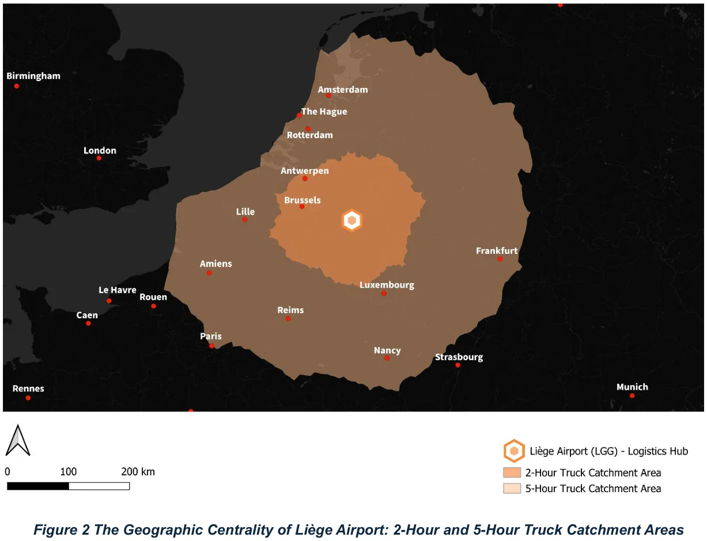
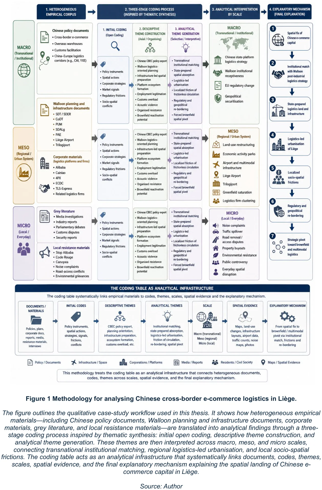
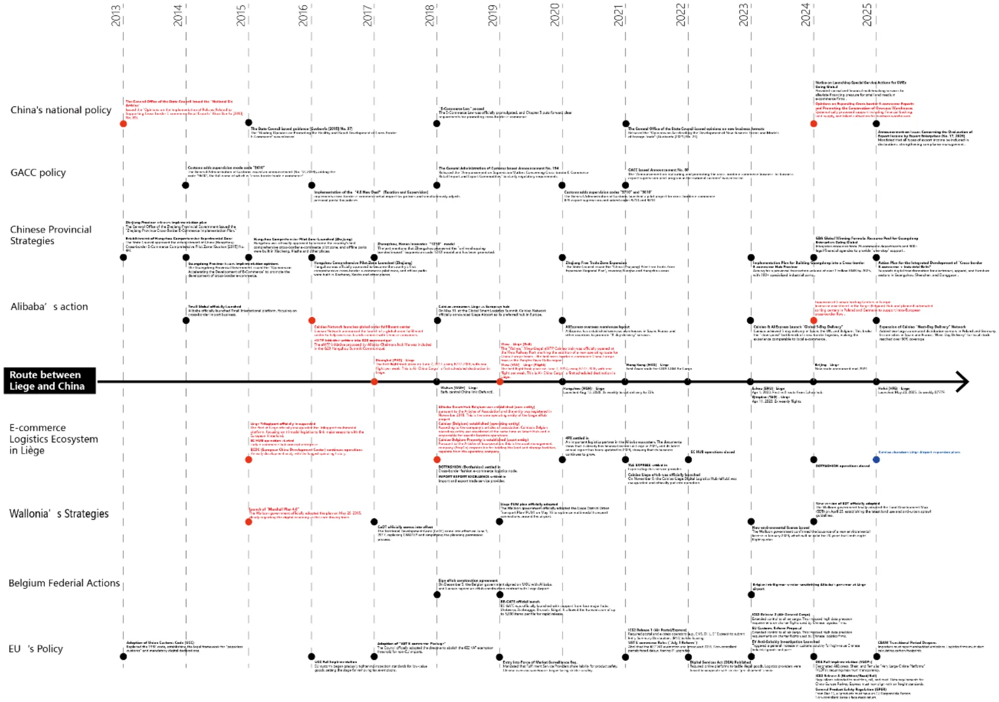
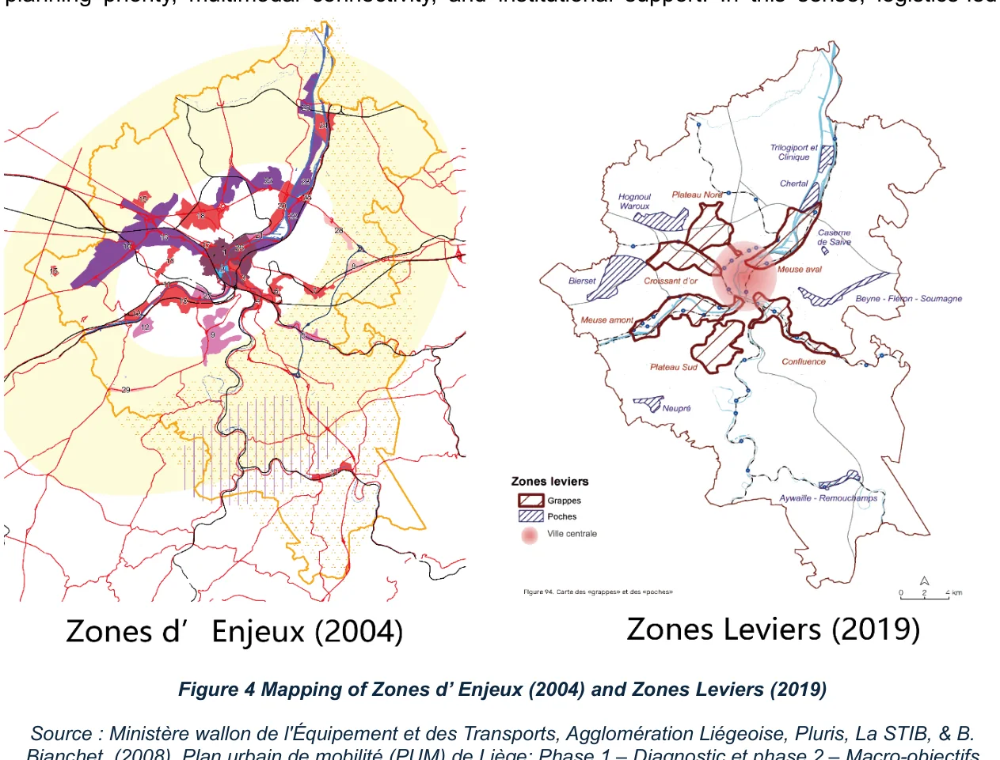
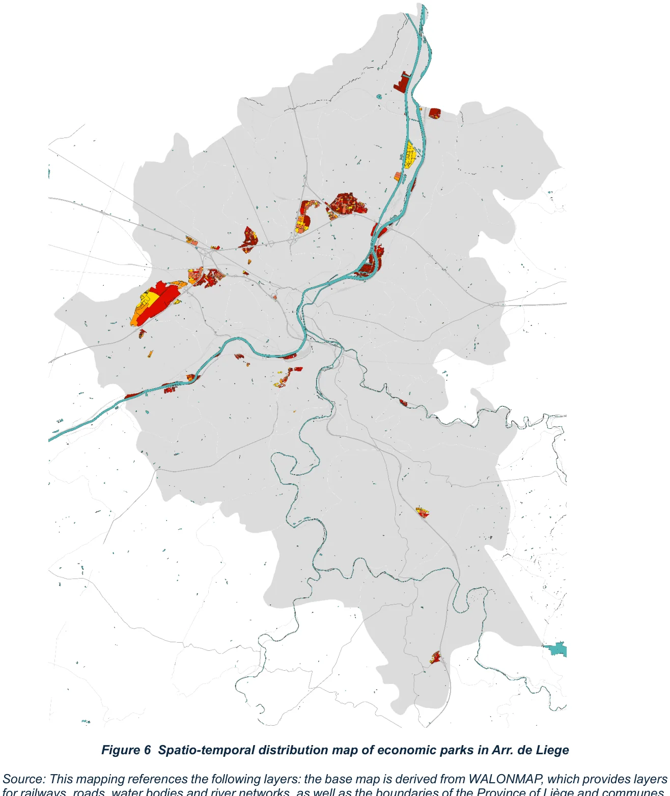
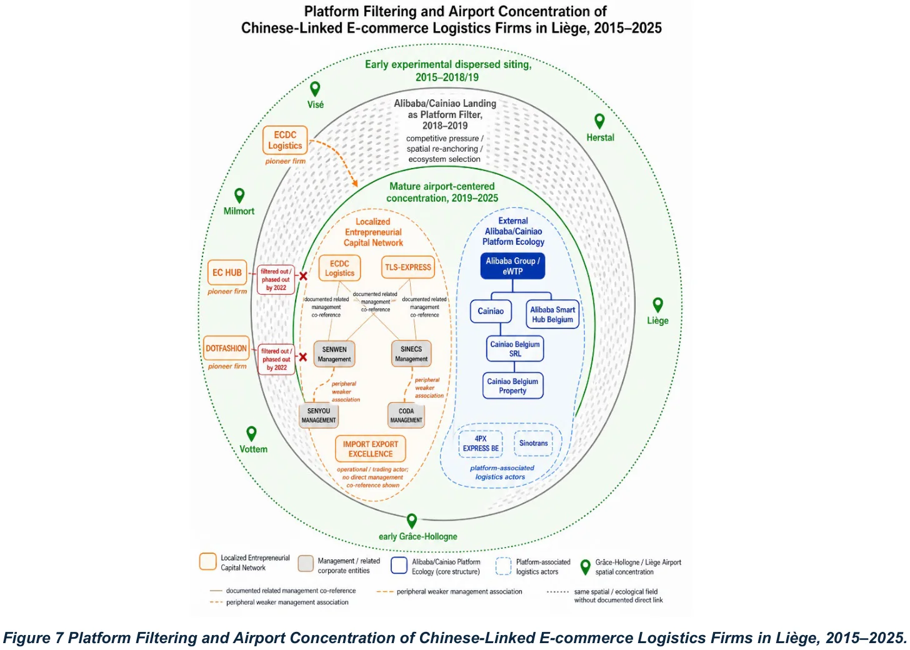
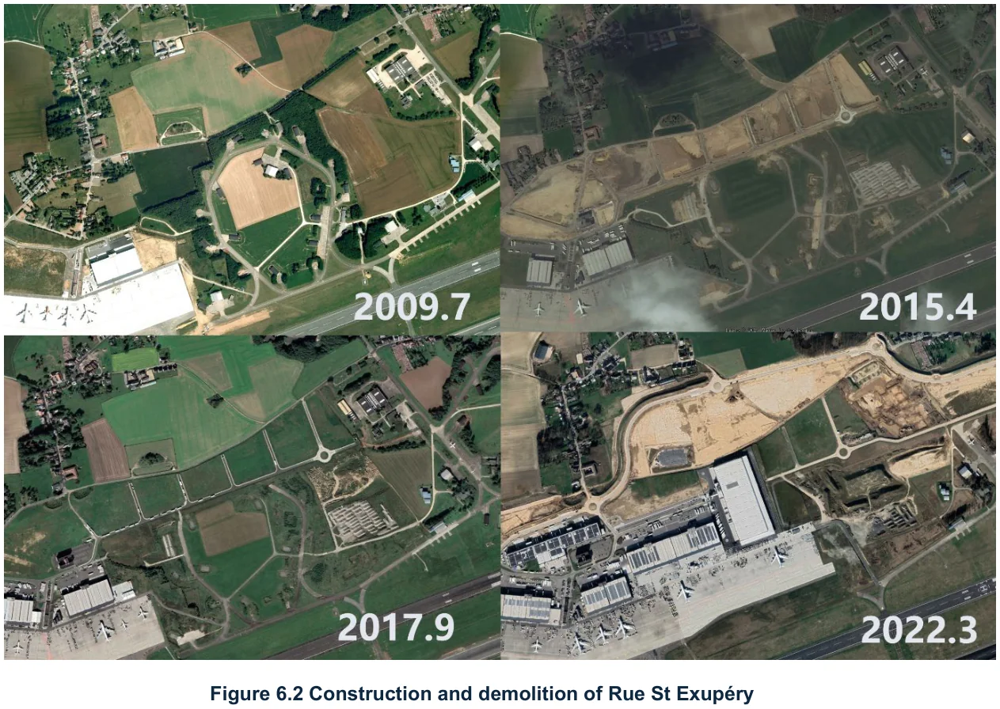

Logistics-led urbanization, institutional matching and spatial frictions in Liège
Case: the Wallonia–Liège logistics nodeSupervisor: Prof. Wojciech KębłowskiSubmitted 1 June 2026Qualitative case study · documentary coding · spatial reconstruction
3analytical scales: macro, meso, micro
1990–2025span of the institutional timeline
Multisource evidence base: policy, cadastral, market, corporate, municipal
BeNeLux2026 conference paper, first author
The question
As digital trade accelerates, global supply chains require physical anchors — and those anchors are increasingly built in peripheral, post-industrial regions. The thesis investigates the urbanisation process and local frictions of transnational e-commerce capital, focusing on how the Wallonia–Liège logistics node and Liège Airport were transformed into a major European cross-border e-commerce gateway.
The core question is how the rapid flows of transnational e-commerce capital physically materialise in such areas — and what institutional and spatial frictions emerge when global supply-chain imperatives meet local land-use limits.

Fig. 1 — The geographic centrality of Liège Airport: 2-hour and 5-hour truck catchment areas. Source: author's elaboration based on European road-network isochrone analysis.
Method: one case, three scales
The thesis adopts a qualitative case-study methodology supported by theory-informed documentary coding, spatial reconstruction and limited descriptive quantification, treating the Wallonia–Liège logistics node as a single embedded case. The analysis is organised around three scales, each corresponding to one empirical chapter and supported by its own set of documentary and spatial sources.
Macro — institutional matching. How Liège became a European gateway: the convergence of Wallonia's post-industrial logistics strategy, airport regionalisation, Chinese cross-border e-commerce policy, platform logistics, customs facilitation and the China–Europe logistics corridor.
Meso — logistics-led urbanisation. How the institutional match became spatially materialised in the Arrondissement de Liège: economic activity parks, highway corridors, rail and river infrastructure, airport-adjacent logistics zones and Chinese-linked corporate locations.
Micro — spatial friction. The project-level consequences of airport-centred e-commerce logistics: land expropriation, public infrastructure reconfiguration, road pressure, noise exposure, property buyouts and local resistance.
Across the scales the thesis combines qualitative document analysis, descriptive quantification, spatial mapping and process tracing. A structured coding table functions as the analytical infrastructure connecting source material to codes, descriptive themes, analytical themes, spatial verification and chapter argument.

Fig. 2 — Methodology for analysing Chinese cross-border e-commerce logistics in Liège. Source: author.
Evidence base
Chinese policy materials coded for cross-border e-commerce support, overseas-warehouse development, eWTP, customs facilitation and China–Europe logistics corridors; Walloon policy coded for post-industrial redevelopment, airport regionalisation, logistics competitiveness, investment attraction and infrastructure support.
Regional and supracommunal planning documents — SDT/SDER, CoDT, PUM and SDALg — coded for economic activity zones, logistics corridors, strategic nodes, spatial optimisation and brownfield redevelopment.
SPI park records, cadastral data, WalOnMap layers, historical orthophotos, airport imagery, port materials and logistics market reports used to reconstruct the spatial and temporal development of logistics land.
Corporate filings and annual accounts coded for firm location, relocation, continuity, closure and clustering around Grâce-Hollogne and Liège Airport.
At the micro scale: municipal and planning records, mobility studies, media reports, parliamentary debates, NGO materials and noise/PEB data, with satellite imagery and orthophotos verifying concrete spatial change.

Fig. 3 — Multi-scalar institutional and operational timeline of the Sino-European e-commerce supply chain, 1990–2025. Source: compiled by the author from China E-commerce Reports, GACC announcements, Walloon regional planning archives, Alibaba Group records and corporate registries.
What the research found
A “transnational institutional match” — between Wallonia's post-industrial logistics strategy and China's outward cross-border e-commerce expansion — facilitated the landing of capital around Liège. But its materialisation through an airport-centred, high-throughput logistics model generated severe localised conflicts.
Rapid land depletion — greenfield dependence with brownfield redevelopment lagging behind the pace of demand.
Mobility spillovers — truck traffic spilling beyond the airport zone, road saturation and pressure on interchanges.
Public infrastructure reconfiguration — land acquisition, expropriation and the removal or re-routing of public roads.
Local contestation — public controversy, environmental opposition, legal appeals and activist mobilisation, together with unease about employment outcomes.
The thesis concludes by highlighting the physical and social scalability limits of this external-capital-driven model of logistics-led urbanisation. Faced with mounting local resistance, land scarcity, regulatory scrutiny and geopolitical uncertainty, future logistics development in Wallonia would require stronger coordination between airport expansion, brownfield redevelopment, multimodal logistics planning and long-term spatial optimisation.

Fig. 4 — Mapping of Zones d'Enjeux (2004) and Zones Leviers (2019). Source: Ministère wallon de l'Équipement et des Transports et al. 2008; PW, PLURIS, TRANSITEC et al. 2019.

Fig. 5 — Spatio-temporal distribution of economic parks in the Arrondissement de Liège. Source: author.

Fig. 6 — Platform filtering and airport concentration of Chinese-linked e-commerce logistics firms in Liège, 2015–2025. Source: author.

Fig. 7 — Construction and demolition of Rue St Exupéry: satellite imagery and orthophotos used to verify concrete spatial change at the micro scale. Source: author, based on satellite imagery.
Generative AI: what was used, and how it was verified
The thesis carries a formal statement of generative-AI use. It is worth setting out precisely, because the discipline behind it matters more than the tools.
Data analysis and structuring. Based on a self-designed analytical framework and coding rules, ChatGPT 5.5 was used to extract key corpus from source text and organise it into spreadsheets. The AI was required to return the original source sentences so that every extraction could be manually cross-referenced.
Terminology translation. AI supported Chinese–English translation of technical terminology to keep professional accuracy and consistency.
Diagram testing. Different diagram styles were trialled in Nano Banana from hand-made drafts and prompts, to make the figures attractive and easy to understand.
Editing and proofreading. Gemini 3.1 Flash-Lite was used for grammatical correction and refinement of vocabulary and phrasing after the first draft.
What AI did not do. Primary data was collected manually by the author from ProQuest, industry reports by CBRE and BNP Paribas, the WalOnMap platform and the official website of the Chinese Ministry of Commerce. No generative AI was used in data collection, and the analytical framework and coding rules were established independently.
Verification protocol. The AI had to supply specific sources, index links and original quoted text. Any analysis found on manual review to contain hallucinations was excluded from the final results, and all AI-processed translations and refinements were checked so that the author's original intent, logic and content remained unaltered.
Academic output
Liège Airport: A Chinese E-commerce Gateway in the Benelux. BeNeLux Geography Conference, 2026 — first author, presented in a parallel session.
Source: master's thesis, The “Landing” of Transnational E-commerce Capital: Logistics-led Urbanization, Institutional Matching, and Spatial Frictions in Liège (Master in Urban Studies, VUB; MSc Geography, track Urban Studies, ULB; submitted 1 June 2026). All photographs and figures in the thesis were produced by the author unless otherwise credited.